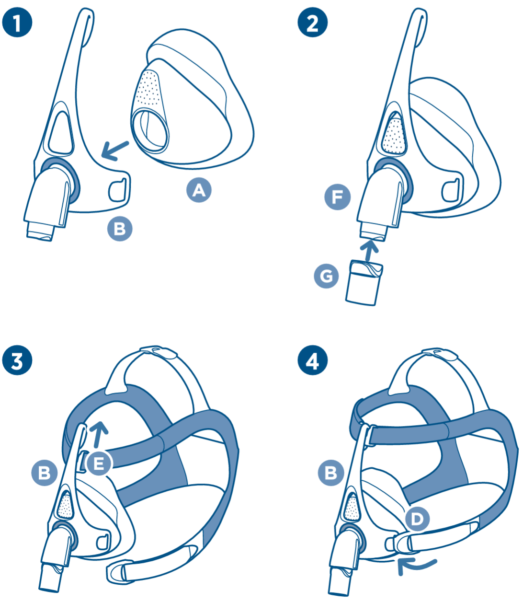

F&P Vitera Full Face
Mask User Guide
6. Mask Assembly
Reassembling Your Mask
- Push the Seal
 firmly into place on the Frame
firmly into place on the Frame  .
. - Push the Swivel
 onto the Elbow
onto the Elbow  .
. - Slide the Forehead Clip
 onto the top of the Frame .
onto the top of the Frame . - Hook the Headgear Clips
 onto the Frame .
onto the Frame .
💡 Mask Assembly Tip
Check the Swivel is not stuck in the CPAP tube.
Assembly Diagram
